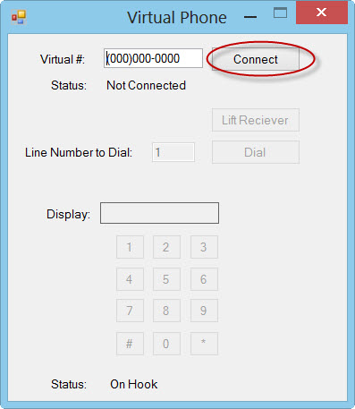
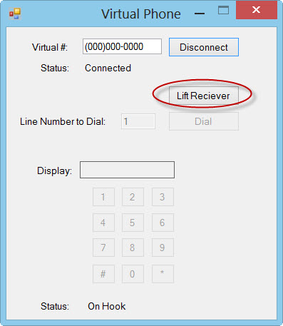
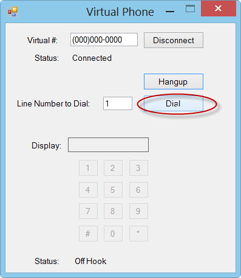

Requirements
Window Server 2003/2008, Windows 7
Visual Studio 2012. May work fine with VS2010 but I'm not sure if that version supports nuget package restore
For the dialogic plugin:
- Drivers: Dialogic® System Release 6.0 PCI for Windows
- Dialogic voice cards that the Dialogic driver supports. Please note this release currently only supports analog voice cards. The dialogic plugin has been tested with d/41jct and d/120jct-ls cards
Getting started
Download the code from github and use your windows explorer to view the files. You will notice the root folder has an ivrToolkit.sln solution file. Open this file up in VS2012 and compile it. It should automatically download the required nuget packages that the projects use.
Simulator Example
The SimulatorTest project is a console application which waits for an incoming call. In the examples folder, set the SimulatorTest project as the startup project and then run it in Visual Studio.
Now, using the windows explorer, locate the Virtual Phone executable and run it.(ivrToolkit.VirtualPhone\bin\Debug\ivrToolkit.VirtualPhone.exe)
First start by connecting to the Simulator Test app:

Next lift the receiver:

and then finally press the Dial button:

After a couple of rings you should hear the welcome message. Please note, there is a bug in the playing of the wav files with the simulator plugin. You will hear a bit of a click noise at the end of each file played. This noise is does not exist with the Dialogic plugin. Also in the simulator plugin when stepping through the debugger you may lose key presses. This also does not happen with the Dialogic Plugin.